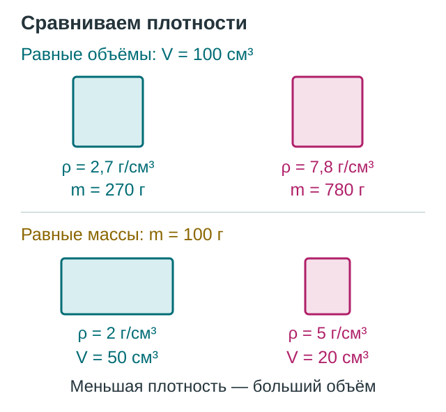

Плотность вещества. Расчёт массы и объёма тела
Два кубика одинакового размера могут иметь разные массы. А большой кусок пенопласта бывает легче маленькой металлической детали. Чтобы связать массу с объёмом, нужно знать плотность вещества.
Что показывает плотность
Масса \(m\) характеризует инертность тела; её измеряют весами, единица СИ — килограмм. Объём \(V\) показывает, какую часть пространства занимает тело; единица СИ — кубический метр.
Плотность \(\rho\) («ро») — отношение массы однородного тела к его объёму. Она показывает массу единицы объёма вещества.
Например, \(2700\ \text{кг/м}^3\) означает, что кубический метр вещества имеет массу \(2700\ \text{кг}\). Маленький предмет из него будет легче: его объём меньше.


У одного однородного вещества при одинаковых условиях масса пропорциональна объёму. Если разрезать брусок пополам, масса и объём каждой половины уменьшатся вдвое, а плотность останется прежней.
Различие плотностей связано и с массами частиц, и с их количеством в данном объёме. Плотность зависит также от температуры и агрегатного состояния; табличные значения относятся к определённым условиям.
Согласуем единицы
Можно считать в килограммах и кубических метрах или в граммах и кубических сантиметрах. Не смешивайте эти наборы единиц.
Почему коэффициент равен тысяче? \(1\ \text{г}=0{,}001\ \text{кг}\), а \(1\ \text{см}^3=0{,}000001\ \text{м}^3\): при переводе объёма коэффициент длины возводят в куб.
- \(2{,}7\ \text{г/см}^3=2700\ \text{кг/м}^3\); \(800\ \text{кг/м}^3=0{,}8\ \text{г/см}^3\).
- \(1\ \text{л}=1\ \text{дм}^3=0{,}001\ \text{м}^3\); \(1\ \text{мл}=1\ \text{см}^3\).
Не сравнивайте плотности только по числам: \(2{,}7\ \text{г/см}^3\) больше, чем \(1000\ \text{кг/м}^3\).
Три формулы — одна связь
Из определения плотности получаем формулы для массы и объёма:

Как измерить объём
Прямоугольный брусок: измерьте длину \(a\), ширину \(b\) и высоту \(c\) в одних единицах и найдите \(V=abc\). Например, \(2\cdot3\cdot5=30\ \text{см}^3\) для размеров в сантиметрах.
Тело неправильной формы: полностью погрузите его в воду и найдите разность показаний мензурки:

Мензурку держат вертикально, показание снимают на уровне глаз по нижнему краю мениска воды. Тело не должно растворяться, впитывать воду или удерживать пузырьки воздуха. При частичном погружении измеряется только объём погружённой части.
Как решать задачи
- Запишите данные с единицами; уточните, нужна масса тела, жидкости или материала без полости.
- Выберите формулу и согласуйте единицы.
- Вычислите результат, укажите единицу и проверьте смысл: у того же вещества большему объёму соответствует большая масса.
Вопросы для самопроверки
- Что означает плотность \(900\ \text{кг/м}^3\)? Почему размер однородного образца сам по себе не меняет плотность?
- У двух сплошных кубиков равные объёмы, а плотности \(2700\) и \(7800\ \text{кг/м}^3\). У какого масса больше? Как сравнить массы? А как сравнить объёмы тел равной массы с плотностями \(2\) и \(5\ \text{г/см}^3\)?
- Почему при расчёте учитывают массу пустого сосуда, полости тела и условия измерения мензуркой?
Задачи для самостоятельной работы
- Плотность и единицы. Масса однородного тела \(180\ \text{г}\), объём \(60\ \text{см}^3\). Найдите плотность в \(\text{г/см}^3\) и \(\text{кг/м}^3\).
- Масса материала. У металлической детали внешний объём \(100\ \text{см}^3\), объём внутренней полости \(20\ \text{см}^3\). Плотность металла \(7{,}8\ \text{г/см}^3\). Найдите массу детали; массой воздуха пренебрегите.
- Жидкость и сосуд. Пустой сосуд имеет массу \(120\ \text{г}\), сосуд с жидкостью — \(360\ \text{г}\), объём жидкости \(300\ \text{см}^3\). Найдите плотность жидкости. Какой объём в литрах займут \(2{,}4\ \text{кг}\) той же жидкости при тех же условиях?
- Объём по размерам. Однородный брусок имеет размеры \(2\ \text{см}\times4\ \text{см}\times5\ \text{см}\) и массу \(320\ \text{г}\). Найдите объём и плотность.
- Вытесненная вода. В мензурке было \(40\ \text{мл}\) воды. После полного погружения нерастворимого тела показание стало \(65\ \text{мл}\); масса тела \(200\ \text{г}\). Тело не впитывает воду, пузырьков воздуха нет. Определите объём тела и его плотность.
Домашнее задание
§23–24. Повторите смысл плотности, три расчётные формулы и перевод единиц. Научитесь объяснять, почему плотность однородного вещества при одинаковых условиях не зависит от размера образца.